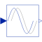

PadeDelayPade approximation of delay block with fixed delayTime (use balance=true; this is not the default to be backwards compatible) |

|
Information
This information is part of the Modelica Standard Library maintained by the Modelica Association.
The Input signal is delayed by a given time instant, or more precisely:
y = u(time - delayTime) for time > time.start + delayTime
= u(time.start) for time ≤ time.start + delayTime
The delay is approximated by a Pade approximation, i.e., by a transfer function
b[1]*s^m + b[2]*s^[m-1] + ... + b[m+1]
y(s) = --------------------------------------------- * u(s)
a[1]*s^n + a[2]*s^[n-1] + ... + a[n+1]
where the coefficients b[:] and a[:] are calculated such that the coefficients of the Taylor expansion of the delay exp(-T*s) around s=0 are identical up to order n+m.
The main advantage of this approach is that the delay is approximated by a linear differential equation system, which is continuous and continuously differentiable. For example, it is uncritical to linearize a system containing a Pade-approximated delay.
The standard text book version uses order "m=n", which is also the default setting of this block. The setting "m=n-1" may yield a better approximation in certain cases.
It is strongly recommended to always set parameter balance = true, in order to arrive at a much better reliable numerical computation. This is not the default, in order to be backwards compatible, so you have to explicitly set it. Besides better numerics, also all states are initialized with balance = true (in steady-state, so der(x)=0). Longer explanation:
By default the transfer function of the Pade approximation is implemented in controller canonical form. This results in coefficients of the A-matrix in the order of 1 up to the order of O(1/delayTime)^n. For already modest values of delayTime and n, this gives largely varying coefficients (for example delayTime=0.001 and n=4 results in coefficients between 1 and 1e12). In turn, this results in a large norm of the system matrix [A,B;C,D] and therefore in unreliable numerical computations. When setting parameter balance = true, a state transformation is performed that considerably reduces the norm of the system matrix. This is performed without introducing round-off errors. For details see function balanceABC. As a result, both the simulation of the PadeDelay block, and especially its linearization becomes more reliable.
Literature:
Otto Foellinger: Regelungstechnik, 8. Auflage, chapter 11.9, page 412-414, Huethig Verlag Heidelberg, 1994
Parameters (4)
| delayTime |
Value: Type: Time (s) Description: Delay time of output with respect to input signal |
|---|---|
| n |
Value: 1 Type: Integer Description: Order of Pade delay |
| m |
Value: n Type: Integer Description: Order of numerator (usually m=n, or m=n-1) |
| balance |
Value: false Type: Boolean Description: = true, if state space system is balanced (highly recommended), otherwise textbook version |
Outputs (1)
| x |
Type: Real[n] Description: State of transfer function from controller canonical form (balance=false), or balanced controller canonical form (balance=true) |
|---|
Connectors (2)
| u |
Type: RealInput Description: Connector of Real input signal |
|
|---|---|---|
| y |
Type: RealOutput Description: Connector of Real output signal |